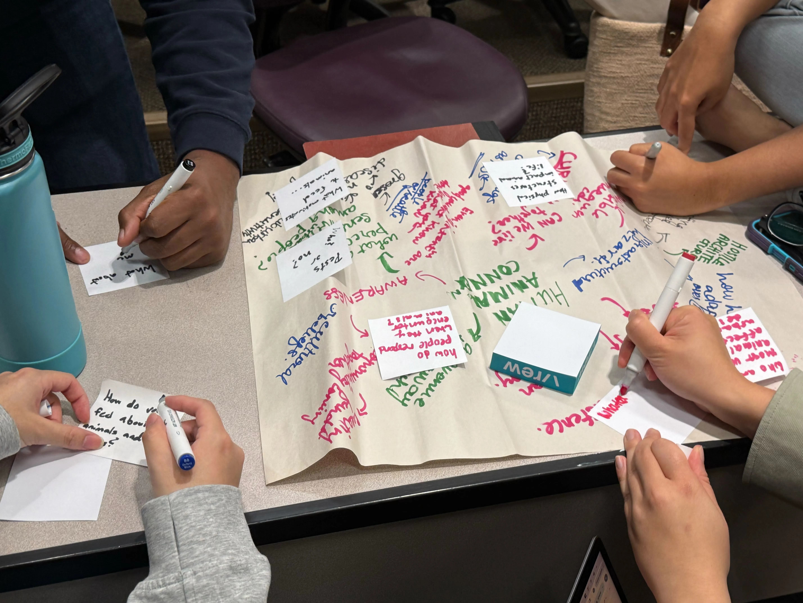
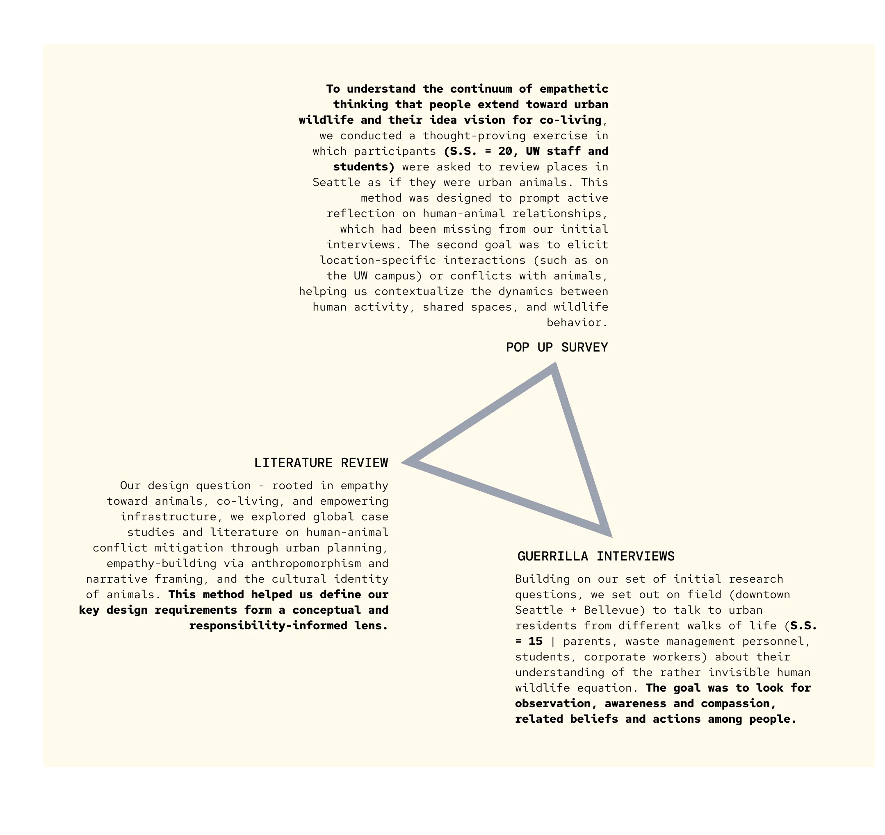
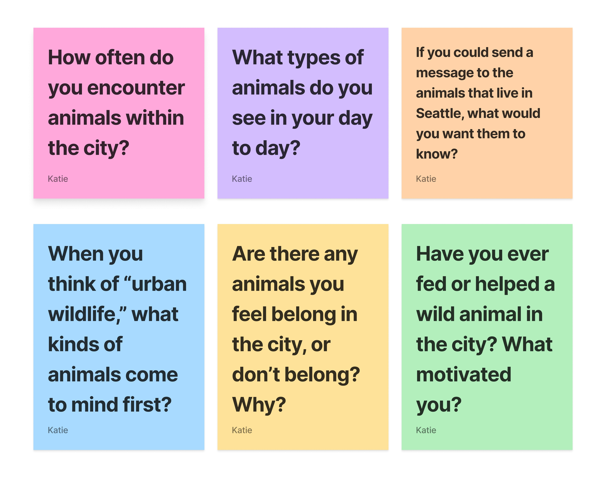
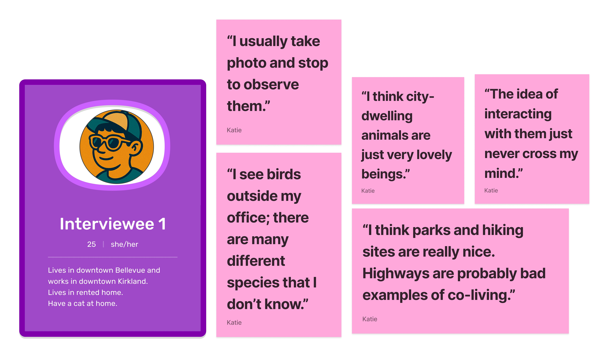
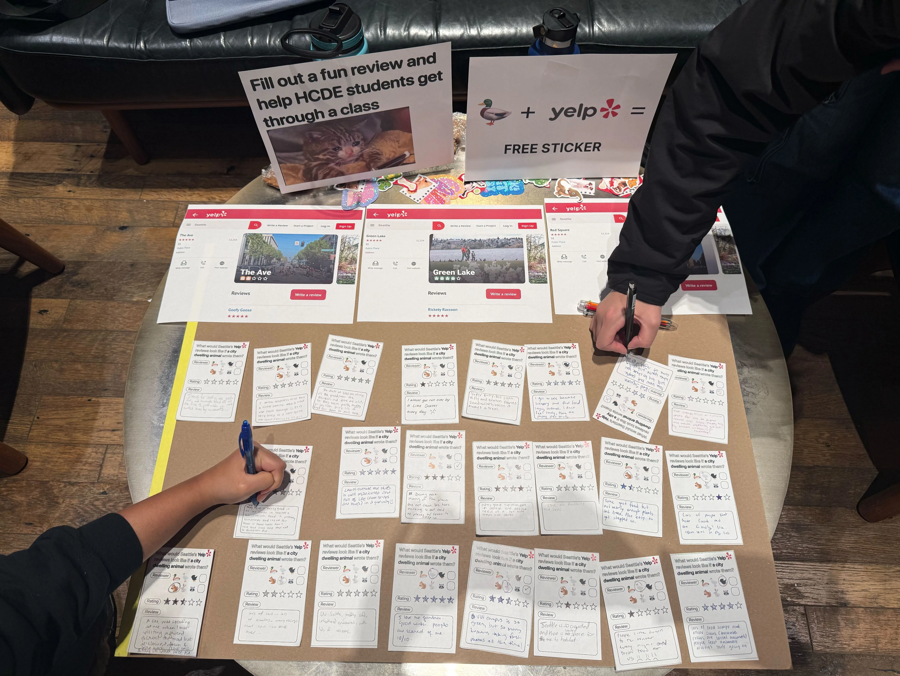
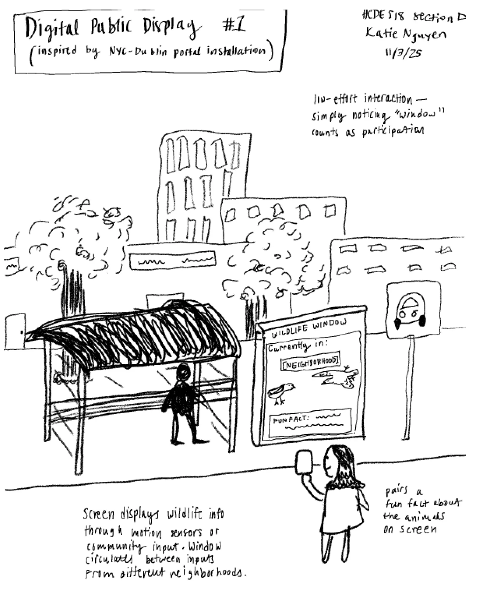
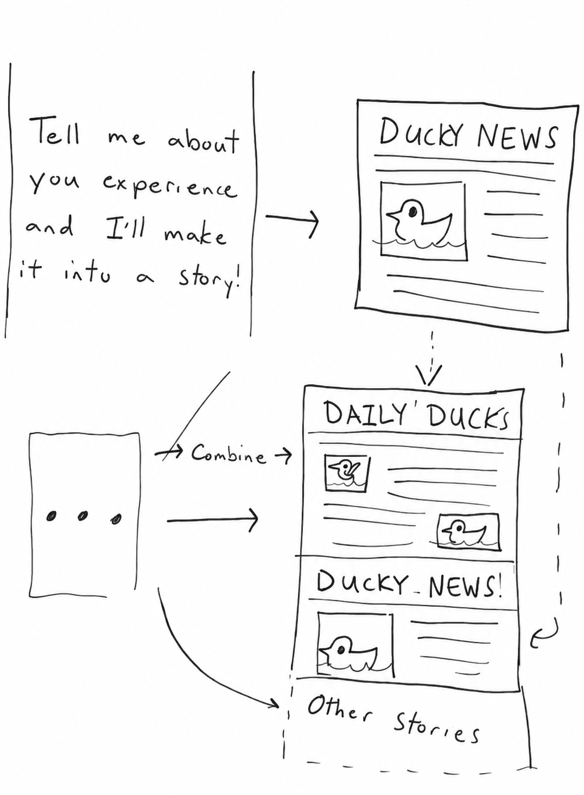
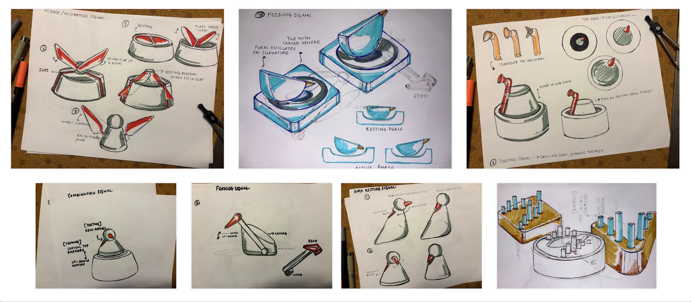
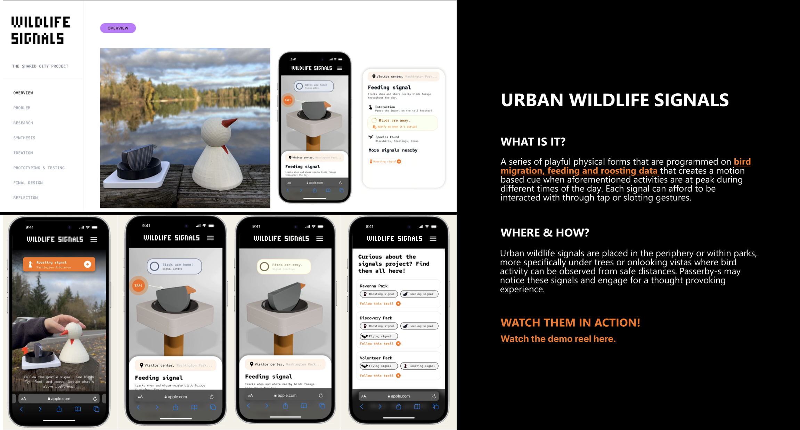

Urban Wildlife Signals
Playful park installations that sense nearby bird activity and gently nudge people to notice the neighbors they usually walk right past.
How might we redesign everyday urban experiences in Seattle's busy areas to foster empathetic, non-intrusive, ecologically sensitive interactions between residents and urban wildlife?
A set of playful installations placed in Seattle parks that detect nearby bird activity and gently nudge people to notice and connect with their non-human neighbors.
Residents begin to see wildlife as co-inhabitants of the city rather than background scenery — and we learned how a user-centered process makes coexistence feel actionable.
How the project started
Our project started as an introspective response to the duck bridge crossing built along the Drumheller fountain on campus — a thoughtful and moving piece of architecture, rather unusual to spot in today's hyper-urban, human-focused settings.
That moment made us pause and ask why a simple duck bridge felt so remarkable in the first place. If campus needed special infrastructure to make ducks visible and safe, what did that say about all the unmarked paths animals take through the city every day? We realized how easily subtle signs of wildlife slip past our attention when we're focused on our own routines and human-made infrastructure.


What would it look like to share a city?

The relationship between people and urban animals is a broad topic, so we started by externalizing everything we knew onto the wall. We used affinity mapping to make sense of all the stories, stats, and observations we'd collected. Clusters like "invisible neighbors," "noise and pace," and "care and responsibility" started to emerge. Those themes ultimately shaped our design question.
How might we redesign everyday urban experiences in Seattle's busy areas that foster empathetic, non-intrusive and ecologically sensitive interactions between local residents and urban wildlife?
We learned that narrowing a design question is part of user-centered design itself: unpacking why the duck bridge felt so remarkable helped us move from broad "urban nature" themes to a specific, actionable problem around overlooked wildlife.
Understanding our target audience
Our research sought to understand this disconnect and identify opportunities where design can nurture empathy and shared responsibility towards urban wildlife.
1Where do people in Seattle interact most often with city-dwelling animals, and how often?
2How do people respond when they encounter wild animals in the city?
3How might studying the adaptive behaviors of city-dwelling animals inform design decisions on resilient and animal-inclusive urban infrastructures?
4How aware are Seattle residents of the wildlife living in proximity to them, and what factors increase or diminish that awareness?

Target users & sites
Our target users are Seattle-area residents whose daily routines occur in dense, urban areas — namely Capitol Hill, University District, and Downtown Bellevue.
These neighborhoods are characterized by dense mixed-use buildings and transit corridors which create frequent but often unnoticed encounters with wildlife.




Through research we learned that user-centered design for urban wildlife has to start with how people actually move, notice, and talk in the city. Triangulating across methods helped us surface tensions and opportunities we never would have seen from a purely speculative starting point.
From data to insights
After collecting research data, we shifted into synthesis. We pulled key quotes, observations, and survey responses onto a shared FigJam board in order to come to the following conclusions.
From our interviews and surveys, two clear patterns emerged in how people relate to urban wildlife that we turned into personas.

Cares about animals and often projects human emotions onto them, but is unsure what meaningful support looks like and rarely feels confident taking action.

Notices animals at risk but often defers responsibility to "the city," feeling powerless to intervene despite noticing roads, construction, and traffic as hazards.

We distilled our insights into three primary research findings that anchored the rest of the project.
Empathy with uncertainty
Residents care about animals and often project human emotions onto them, but they're unsure what meaningful support looks like and rarely feel confident taking action.
Observation as participation
Most people connect with urban wildlife as distant observers — pausing to watch, take photos, or tell stories — because it feels safe, accessible, and respectful of animals' space.
Safety & shared space
Roads, construction, and dense traffic symbolize harm and human dominance. Residents notice animals at risk but often defer responsibility to "the city," feeling powerless to intervene.
Create gentle prompts that spark curiosity and offer small, concrete ways to care for nearby wildlife without requiring expert knowledge.
Build on existing habits of watching and photographing by turning real-time wildlife activity into actions that fit naturally into daily routines.
Place our design in shared public spaces where humans and animals already intersect, reframing infrastructure as a site of co-existence and making risks — and care — more visible.
Taken together, these key findings pointed toward three qualities our solution had to embody:
With our research themes and design requirements in place, we revisited our original design question. Our findings highlighted that the most urgent tensions showed up in busy, hyper-urban areas — places full of trash, traffic, and constrained shared space — where both humans and animals face hazards.
How might we redesign everyday urban experiences in Seattle's busy areas that foster empathetic, non-intrusive and ecologically sensitive interactions between local residents and urban wildlife?
Our research helped us unpack what "care and connection" actually means in practice: interactions that are empathetic, non-intrusive, and ecologically sensitive — specifically in Seattle's busy areas.
Through synthesis we saw how user-centered design turns scattered quotes and anecdotes into clear patterns and personas. That step transformed "people feel disconnected from nature" into concrete situations and needs we could design around.
Exploring possibilities
With a refined design question and three guiding requirements in place, we shifted from understanding the problem to exploring how our design project might actually show up in Seattle.

Our goal in this phase was to go broad first. We generated many possible directions, then narrowed in on concepts that felt playful, non-intrusive, and ecologically sensitive.




Each teammate did rapid sketches, generating dozens of low-fidelity ideas — from speculative urban infrastructure and art installations to small personal devices — without worrying about feasibility or polish. Seeing all of these loose sketches side by side helped us resist the urge to latch onto a single favorite too early and revealed just how many different ways our design could live in the city.

We grouped ideas to see patterns across individual sketches. Our main categories were infrastructure, storytelling, games, and maps. From these groups, we chose three concepts to explore more in depth, letting us compare how different directions would play out in someone's actual day.

A framed viewport that reveals wildlife activity in a place.

A station that prints tiny field notes about nearby animals.

Ambient installations that translate real animal activity into gentle cues.
Our research insights, critique sessions, and peer feedback pushed us towards a single design concept.
The direction that best balanced our criteria was a set of ambient installations in busy urban parks that translate real animal activity into gentle signals for humans — the core of what became Urban Wildlife Signals.
A series of physical signals programmed with migratory pattern and movement data of urban wildlife that provide motion + audio/visual cues, directing the user to look in a certain direction and observe a viewing frame where urban wildlife may be present.

Building and learning
This phase was about testing form, motion, and ergonomics in the real world — and seeing whether our "gentle nudge" still worked once it left the sketchbook.
Exploring form
We explored how bird behaviors could live in physical form — how resting, feeding, and migration might read through simple motion and silhouette. From those sketches we built low-fidelity foam models of three signal types, trying different scales without getting stuck on finish.
Because the concept is open-ended, we knew some users would want context — so we prototyped a simple mobile site, linked via an NFC tag on each signal, with a short demo video and a plain explanation of how the devices work.

Initial discovery
What draws the eye first, and does the signal invite a second look?
NFC interaction
Can people find and use the tap-to-learn-more path when curious?
Information retention
What did people actually take away about the project afterward?
The flying signal was reworked to be visually cohesive with the other two.
No activation window — users press the button any time to view the signal's action.
A timer on the NFC site tells users when the signal activates next.
Resting → Roosting and Migration → Flying, for familiarity.
The Urban Wildlife Signals experience
The final design makes wildlife discovery delightful and accessible — intuitive to read at a glance, playful to interact with, and quietly encouraging of exploration. (hover a signal ↓)
Feeding
A beak dips and pecks toward the ground, cueing you to look where birds are foraging nearby.
Roosting
A settled head on a ball-and-socket joint — the clearest directional cue, pointing toward perched birds.
Flying
Wings sweep in a gliding arc, tracing the local movement of birds passing through the park.
Subtle, glanceable motion
Each form abstracts a single behavior into a motion legible from a distance, without instructions, and calm enough not to startle wildlife.
Toy-like, opt-in depth
Buttons, materials, and finishes keep the objects inviting. An NFC tag quietly offers more for the curious — and a live timer shows when each signal activates next.

Future scope
A curated experience
The info site could become a project of its own — curating signal trails through a park's discover page, or a text-only community forum where people share what they noticed.
UX for good · AI for good
The signals collect no user data for commercial purposes — they rely solely on bird-movement data programmed into the hardware. We keep asking: how might urban signals build an AI-based prediction model that supports wildlife conservation in cities?
A shared belief in "less is more" for oversaturated urban ecologies guided the whole project.
HCDE 518 · FALL 2025
CHRISTOPHER JONES · KATIE NGUYEN · STUTI SHAH · YUE XU